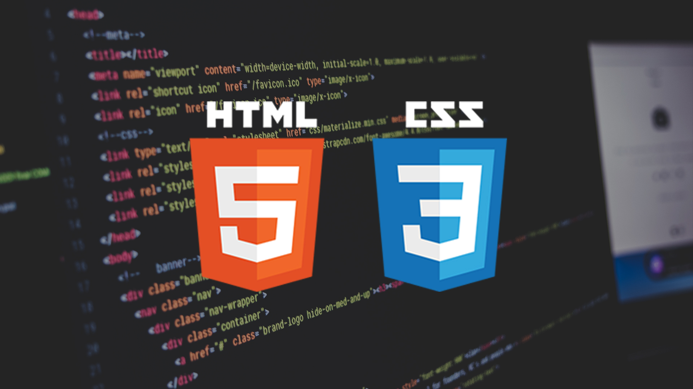

HTML (Hypertext Markup Language) en CSS (Cascading Style Sheets) zijn twee van de meest fundamentele technologieën die worden gebruikt om een webpagina te maken. HTML wordt gebruikt om inhoud op het web te structureren, terwijl CSS wordt gebruikt om die inhoud te stylen